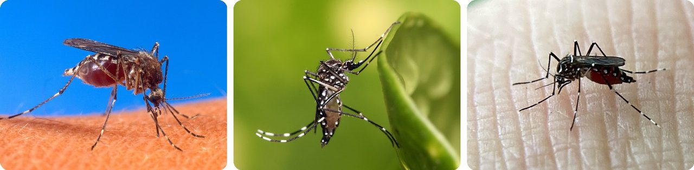
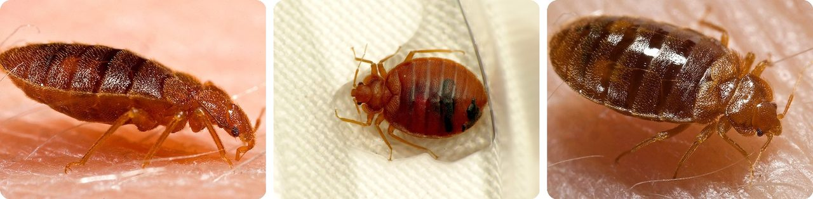
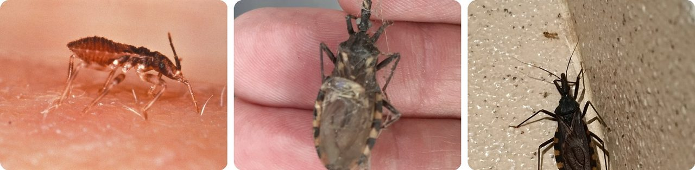
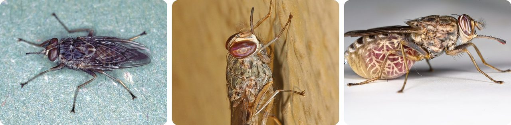
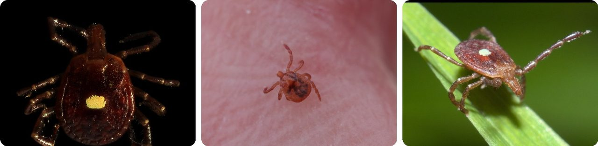
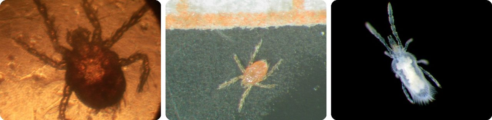
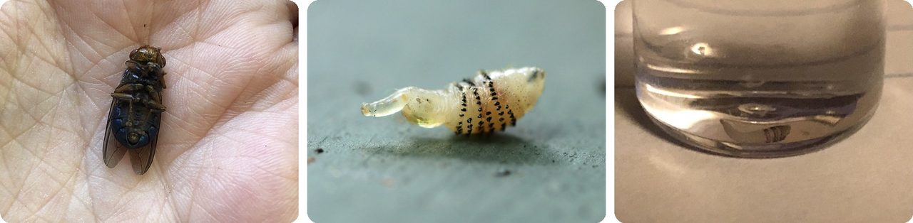
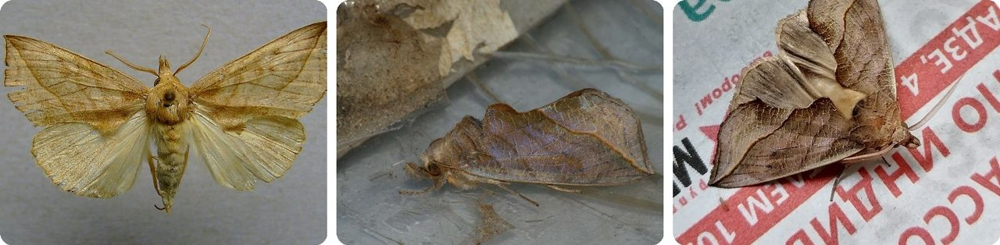
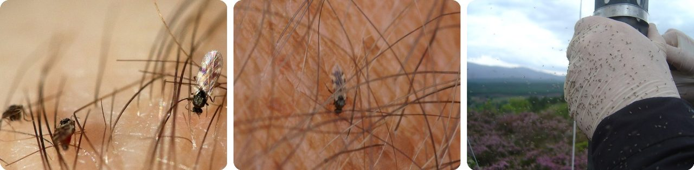
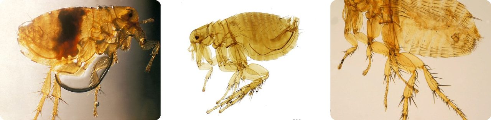

🌍 Top 10 Bug Bites
Oct 3, 2026
1. 🦟 Only female mosquitoes bite, and they do it for their eggs

Male and female mosquitoes both live on nectar and plant juices. But in many species, a female needs a blood meal to grow her eggs, so she's the only one who bites.
She finds you by smelling the carbon dioxide in your breath. Her "needle" is really a bundle of six thin blades tucked inside a groove, like a cable in a rain gutter. As she pushes them into your skin, her saliva stops your blood from clotting so it keeps flowing.
That saliva is also how diseases like malaria, dengue and yellow fever get in. Mosquito-borne illness kills more than a million people a year, about one every 30 seconds.
Basically, she's an expectant mom on a blood run.
2. 🛏️ Bed bugs numb your skin before they drink

Bed bugs saw through your skin with their mouthparts, then pump in saliva carrying a painkiller and a blood thinner. You don't feel a thing, and the blood keeps flowing.
They don't need to do it often. A bed bug feeds only every five to seven days, then crawls back to its hiding spot in the mattress or couch. Between meals, it can survive up to about 300 days without eating, almost 10 months.
About 1 in 5 people have no reaction to the bites at all. Before the 1950s, roughly 30% of homes in the United States had bed bugs.
Think of it as a pickpocket who hands you a numbing shot first.
3. 🇧🇷 Kissing bugs bite near your lips, then poop on you

Kissing bugs hide during the day and come out at night, while you're asleep. They got their name from their habit of feeding around people's mouths.
The bite itself isn't the danger. The Chagas parasite travels in the bug's poop, not its saliva, and reaches people from there. Most bloodsucking bugs, like malaria mosquitoes, spread disease through saliva, so this is unusual.
In 1909, Brazilian doctor Carlos Chagas figured this out in the village of Lassance, where locals complained about bugs that bit at night. The disease now carries his name.
It's a goodnight kiss you really don't want.
4. 🌍 Tsetse flies give birth to one baby at a time

Most insects lay piles of eggs. A female tsetse fly, found in Africa, makes just one at a time and keeps it inside her body.
The baby grows inside her through its first larval stages, and she feeds it a milky liquid, almost like a mammal. When it's ready, she gives birth to it. The larva crawls into the ground, forms a hard shell, and comes out later as an adult fly.
Their bite spreads sleeping sickness, which is fatal without treatment. Strangely, tsetse flies are drawn to the color blue, so simple traps made of blue cloth catch them.
In other words, it's a fly that breastfeeds.
5. 🇺🇸 A lone star tick bite can make you allergic to steak

The lone star tick lives across the eastern United States. Its bite doesn't hurt, so it can stay attached for up to seven days while it fills up with blood. The "lone star" is the white spot on the female's back, not Texas.
Its bite can trigger alpha-gal syndrome, an allergy to a sugar found in beef, pork, lamb and other mammal meat. Here's the sneaky part: the reaction usually hits 2 to 8 hours after eating, so people don't connect it to dinner.
The US Centers for Disease Control and Prevention estimated about 450,000 Americans had it by the end of 2022. There's no cure.
It's like a tick bite that cancels your burger order.
6. 🌾 Chiggers don't drink blood, they dissolve your skin

Chiggers are baby mites, about 0.2 mm across, smaller than the dot at the end of this sentence. Only the babies bite. The adults are harmless and eat plants and insects.
They don't burrow in, and they don't suck blood. A chigger squirts in juices that break down your skin cells. Your skin hardens around the spot into a tiny straw, and the chigger slurps up the liquid through it.
The itch often doesn't start until 24 to 48 hours later, so most people never figure out where they picked them up.
Think of it as a bug that makes a smoothie out of your skin.
7. 🌎 Human botflies use mosquitoes as delivery drones

The human botfly lives from southern Mexico to Argentina. The female doesn't lay her eggs on you directly. Instead, she catches a mosquito, glues her eggs onto its body, and lets it go.
When that mosquito lands on someone to bite, the eggs hatch, and the larvae slip into the skin through the bite. They grow there for about eight weeks, then drop out to finish growing in the soil.
The easiest fix is surprisingly simple: smear petroleum jelly over the spot. The larva can't breathe and can be pulled out with tweezers after a day.
It's a hitchhiker riding inside someone else's bite.
8. 🇷🇺 The vampire moth drills into skin to drink blood

Calyptra thalictri normally lives on fruit. But in experiments where moths from Russia were offered a human hand, some drilled their hook-like tongues under the skin and drank blood for up to 20 minutes.
Only the males do it. Scientists think they're after the salt in blood, which they pass to females when they mate. That salt helps the caterpillars, which eat leaves that have very little of it.
The moth is spreading north and west: it reached Finland in 2000 and Sweden in 2008. It's not thought to be a threat to people.
Picture a moth bringing his date a salty snack.
9. 🏴 Scotland's freezing 2010 winter made its midges worse

The Highland midge is a tiny biting fly that swarms in clouds across the Scottish Highlands in summer. Most of their blood actually comes from cattle, sheep and deer, but they're happy to bite hikers too.
After a very cold start to 2010, you'd think the midges would die off. Instead, there were more of them. The cold had killed off bats and birds that eat midges, so more survived.
Your best defense is the weather: a breeze over about 10 km/h (6 mph), a light wind you can just feel on your face, makes them far less active.
Basically, the cold winter wiped out the midges' enemies, not the midges.
10. 🐀 The plague flea can jump 200 times its own length

The Oriental rat flea is about 2.5 mm long, roughly the size of a sesame seed. It has no wings, but its strong legs launch it up to 200 times its body length, about 50 cm. For a person, that'd be a single leap longer than three football fields.
It finds you by smelling your breath, then jumps aboard. Its mouth has two channels: one sucks up blood, the other squirts saliva and partly digested blood into the bite.
That second channel is the problem. A flea that fed on a sick rat can push germs straight into a person, which makes it a main carrier of plague.
It's a tiny syringe with springs for legs.
Fun fact
In 1900, American army doctor Jesse Lazear was in Cuba testing the idea that mosquitoes spread yellow fever. He deliberately let an infected mosquito bite him, caught the disease, and died at 34, seventeen days after writing to his wife that he thought he was "on the track of the real germ." The army said it was an accident, and the truth only came out in 1947, when another doctor read Lazear's own notebook. He's one of many scientists who used their own bodies as test subjects: next time, the wildest self-experiments in science.
Photo credits (Wikimedia Commons)
- #1: Aedes aegypti biting human.jpg by Original author: US Department of Agriculture; then denoised rescaled, enhanced with adaptive denoising filters and minimal resharpening, then unscaled to original resolution, for easier refitting at various resolutions., Public domain
- #1: Aedes aegypti.jpg by Muhammad Mahdi Karim, GFDL 1.2
- #1: Aedes aegypti · NW 47th Ave, Coconut Creek, FL, US by (c) Sandra H Statner, some rights reserved (CC BY), CC BY
- #2: Adult bed bug, Cimex lectularius.jpg by Content Providers(s): CDC/ Harvard University, Dr. Gary Alpert; Dr. Harold Harlan; Richard Pollack. Photo Credit: Piotr Naskrecki, Public domain
- #2: Cimex lectularius · Centreville, MD 21617, USA by (c) Katja Schulz, some rights reserved (CC BY), CC BY
- #2: Bed bug, Cimex lectularius.jpg by Content Providers(s): CDC/ Harvard University, Dr. Gary Alpert; Dr. Harold Harlan; Richard Pollack. Photo Credit: Piotr Naskrecki, Public domain
- #3: Triatoma infestans.jpg by Photo Credit: Content Providers(s): CDC/World Health Organization, Public domain
- #3: Triatoma infestans · Arizu y Echeverría (Godoy Cruz, Mendoza), Godoy Cruz, Mendoza, Argentina by (c) Benjamin Bender, some rights reserved (CC BY), CC BY
- #3: Triatoma infestans · Omereque, Bolivia by no rights reserved, CC0
- #4: Glossina-morsitans.jpg by Alan R Walker, CC BY-SA 3.0
- #4: Tsetse Fly - Glossina species, Gorongosa National Park, Mozambique (flickr) by Judy Gallagher, CC BY 2.0
- #4: Tsetse fly (flickr) by Oregon State University, CC BY-SA 2.0
- #5: Lone Star Tick (Amblyomma americanum) ♀ (14444538883).jpg by Benjamin Smith from United States, CC BY 2.0
- #5: Amblyomma americanum · Fairfax County, VA, USA by (c) Jeff Clark, some rights reserved (CC BY), CC BY
- #5: Amblyomma americanum P1210460b.jpg by xpda, CC BY-SA 4.0
- #6: Aoûtat.jpg by Tib124, CC BY-SA 3.0
- #6: Neotrombicula autumnalis laval stage.jpg by Arne100, CC BY-SA 4.0
- #6: Neotrombicula autumnalis deutonymphal stage.jpg by Arne100, CC BY-SA 4.0
- #7: Dermatobia hominis 119275587.jpg by Amelia Tauber, CC BY 4.0
- #7: Dermatobia hominis · Resende - RJ, Brasil by no rights reserved, CC0
- #7: Dermatobia hominis · Hummingbird Hwy, Middlesex, Belize by (c) Amelia Tauber, some rights reserved (CC BY), CC BY
- #8: Calyptra thalictri 01.jpg by Dumi, CC BY-SA 3.0
- #8: Calyptra thalictri - Vampire moth - Совка василистниковая (39970588375).jpg by Ilia Ustyantsev, CC BY-SA 2.0
- #8: Calyptra thalictri · 11, Новосибирск, Новосибирская область, Россия, 630060 by no rights reserved, CC0
- #9: Highland Midges biting (Culicoides impunctatus).jpg by Dunpharlain, CC BY-SA 4.0
- #9: The biting midge Culicoides impunctatus, Trolla Water, Baltasound - geograph.org.uk - 4138110.jpg by Mike Pennington, CC BY-SA 2.0
- #9: Culicoides impunctatus · Cairngorms National Park, Kingussie, Scotland, GB by (c) Ewan Shilland, some rights reserved (CC BY), CC BY
- #10: Xenopsylla cheopis flea PHIL 2069 lores.jpg by CDC/Dr. Pratt, Public domain
- #10: NHMUK010177265 The plague flea - Xenopsylla cheopis cheopis (Rothschild, 1903).jpg by Olha Schedrina / The Natural History Museum, CC BY 4.0
- #10: Xenopsylla cheopis ZSM.jpg by Katja ZSM, CC BY-SA 3.0


_%E2%99%80_(14444538883).jpg){kind=link}


.jpg){kind=link}
.jpg){kind=link}


.jpg){kind=link}